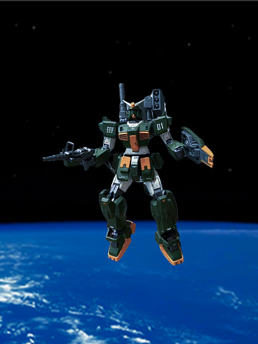

The FAR-78-1 Gundam, called the 'Far Gundam" stamds for Full-Armor-Revised Gundam and was developed in U.C 0080. As the name implies, this is a revised variant of the FA-78-1 Gundam developed during the One Year War. This mobile suit is based on the RX-70 G Ground Gundam but incorpates a new torse, with a 360-monitor cockpit, a new head with highly-accurate sensors, and a new backpack with a 0.45 M cannon and a anti-missle rocket launcher pod. Also, this mobile suit uses a new ally called gundarium platnium and is built into the mobile suit instead being on top of the already exsiting mobile suit like the original FA-78-1 Gundam. This is an effort to increase mobility and agility which does so.
